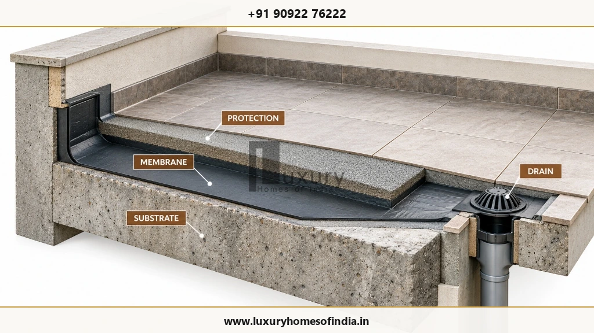
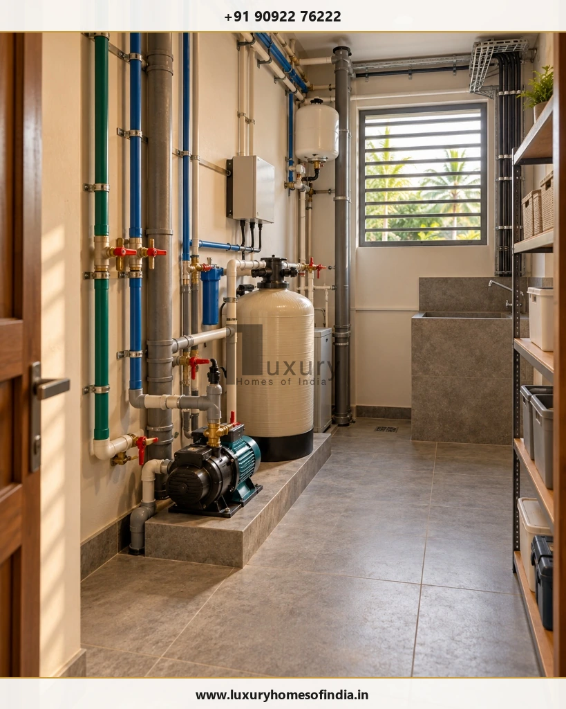

Building a luxury home requires more than premium materials and an impressive façade. The most important luxury home construction mistakes to avoid involve incomplete drawings, unclear costs, inadequate structural planning, poor waterproofing, uncoordinated building services and insufficient quality checks. These decisions can affect comfort, maintenance, construction costs and the long-term usability of the home.
Before building a luxury villa or independent house in Chennai, homeowners should establish a coordinated design, a clearly defined construction scope, a realistic budget and a documented inspection process. Site conditions, local climate, material performance and the needs of the household should inform decisions from the earliest planning stage.
A practical approach is to resolve major design and service decisions before construction, inspect critical work before it is concealed, and document changes throughout execution. The following 15 mistakes explain what to watch for, how to reduce avoidable rework and which questions to discuss with your architect, structural engineer and construction team.

Contemporary Indian luxury residence illustrating coordinated architectural planning, climate-responsive courtyard living, and balanced material proportions.
Key Planning and Structural Decisions
1. Starting Construction Without Complete Drawings
Beginning construction before important decisions are resolved can create avoidable rework. A preliminary floor plan alone is rarely enough to coordinate a complex residence.
Architectural, structural, electrical, plumbing and other relevant service drawings should be coordinated to the extent required by the project before the corresponding work begins.
How to Avoid It
- Finalise the architectural layout and elevation.
- Coordinate structural drawings with the architectural design.
- Plan electrical points, lighting, plumbing and drainage.
- Resolve kitchen, wardrobe and furniture requirements early.
- Identify provisions for air-conditioning, security and home automation where required.
- Maintain revision records and ensure the site team uses current approved drawings.
The objective is not to decide every decorative detail immediately. It is to resolve decisions that affect structure, concealed services and room functionality before they become difficult or costly to change.
2. Choosing a Builder Based Only on the Lowest Quotation
Two construction quotations may appear similar while covering different specifications and responsibilities. One may include external development, waterproofing or selected fittings, while another may exclude them or allow only basic provisions.
How to Avoid It
Request a written scope of work, a detailed Bill of Quantities (BOQ) where applicable, material specifications, allowances, exclusions, payment milestones and a documented process for variations.
Compare each proposal on a like-for-like basis. Clarify who is responsible for procurement, supervision, testing, external works and handover. For more guidance, review red flags when hiring a builder in Chennai.
3. Underestimating the Total Project Budget
The construction quotation may not represent the full cost of delivering a completed home. Design and engineering, building services, interiors, approvals, utility connections and external development can involve separate costs depending on the project.
| Budget Category | Items to Account For |
|---|---|
| Professional services | Architecture, engineering and relevant consultants |
| Core construction | Foundation, structure, masonry and plastering |
| Building services | Electrical, plumbing, drainage and specified systems |
| Finishes | Flooring, doors, windows, painting and fittings |
| Interiors | Kitchen, wardrobes, lighting and custom joinery |
| External development | Compound wall, gate, paving, landscaping and drainage |
| Statutory and utility costs | Applicable approvals, connections and charges |
| Contingency | Unforeseen conditions and approved changes |
4. Ignoring Soil Conditions and Foundation Requirements
The foundation must suit the ground conditions, building loads and proposed structural design. A neighbouring property is not a reliable substitute for an assessment of your own plot.
How to Avoid It
- Share available site information with the design team.
- Arrange soil investigation where required by the engineer or site conditions.
- Account for plot levels, drainage and known ground constraints.
- Have the foundation designed by a qualified structural professional.
- Inspect the relevant work against the approved design.
Foundation dimensions and construction methods should follow engineering assessment rather than assumptions about what worked on another property.
5. Compromising on Structural Engineering
Large openings, double-height spaces, cantilevers, roof terraces and expansive glazing may require careful coordination between architecture and structural design.
The appearance of a design should never be used as a reason to make unauthorised changes to beams, columns, slabs or other structural members.
Structural engineering supervision: civil engineer inspecting roof slab rebar reinforcement, beam ties, and column starters prior to concrete placement.
How to Avoid It
Engage a qualified structural engineer, resolve the structural system early, follow approved reinforcement and concrete specifications, and complete required inspections before concrete placement. Retain the relevant drawings, revisions and inspection records. Applicable building regulations and engineering standards must be confirmed for the specific property.
Material Selection, Services and Climate Resilience
6. Treating Waterproofing as an Optional Extra
Water ingress can damage finishes, cabinetry, ceilings and other building components. Problems may be difficult to diagnose when waterproofing is poorly detailed or covered before appropriate checks.

Engineered waterproofing system: photorealistic cross-section showing concrete substrate, elastomeric membrane, protective screed, and drain detailing.
How to Avoid It
- Identify waterproofing requirements during design.
- Specify appropriate systems for terraces, bathrooms, balconies and other exposed areas.
- Coordinate waterproofing with drainage, plumbing and floor levels.
- Follow the specified installation and curing requirements.
- Complete relevant inspections and water tests before covering the work.
The correct system depends on the application and site conditions. Product selection alone cannot compensate for inadequate preparation or execution.
7. Planning Interiors Only After Civil Work Is Complete
An attractive room may still be inconvenient if furniture, storage, lighting and services have not been coordinated. Beams can interfere with wardrobes, outlets can end up behind appliances, and ceiling details can conflict with lighting.
How to Avoid It
Plan kitchen and appliance positions, wardrobe dimensions, furniture circulation, lighting, electrical outlets, bathroom fixtures, air-conditioning routes and built-in storage before the relevant construction work. Decorative choices can be refined later where practical, but decisions that affect room dimensions, concealed services or structural elements should be resolved early.
8. Choosing Materials Based on Appearance Alone
A material that looks impressive in a showroom may not be suitable for every location. Stone, timber, exterior cladding, large-format tiles and specialist finishes each have different installation and maintenance requirements.
Ask Four Questions Before Approving a Material:
- Is it suitable for its intended location?
- Can it withstand the expected moisture, sunlight and wear?
- Can it be installed correctly using the specified method?
- What cleaning, repair and maintenance will it require?
Review samples and technical information, and confirm the product, dimensions, finish and installation specification in writing. A considered material choice balances appearance with performance and long-term care.
9. Overlooking Chennai's Climate
Heat, humidity and seasonal rainfall should influence the design of a home in Chennai. Poorly considered orientation, shading, drainage and material choices may affect indoor comfort and maintenance.
How to Avoid It
- Assess site orientation and neighbouring buildings.
- Design suitable shading for exposed openings.
- Consider natural ventilation where the layout and site permit.
- Select glazing and external finishes appropriate to their exposure.
- Coordinate roof drainage and terrace detailing.
- Protect moisture-sensitive materials.
- Integrate air-conditioning with the building layout and energy strategy.
Climate-responsive design is not a particular architectural style. It is the process of adapting a design to its location and intended use.
10. Ignoring Electrical, Plumbing and Home Automation Planning
Concealed services are difficult to modify once walls, floors and ceilings are finished. Electrical loads, equipment locations, water supply, drainage and network requirements therefore need coordinated planning.
How to Avoid It
Identify expected appliance loads, distribution-board locations, water storage and pumping arrangements, drainage routes, network points and security requirements. Plan automation compatibility before choosing devices. Involve appropriately qualified professionals for complex systems, and complete the relevant testing before handover.
Execution, Quality Control and Handover
11. Making Frequent Changes During Construction
A change to one room can affect multiple trades. Relocating a bathroom, for example, may alter plumbing, waterproofing, floor finishes and other coordinated details.
How to Avoid It
Record each significant change before implementation. Document the reason, revised drawings, cost effect, schedule impact and required approval. A written change-control process helps homeowners make informed decisions while keeping the scope and budget visible.
12. Failing to Inspect Critical Construction Stages
Some defects become difficult to identify after work is covered. Reinforcement, concealed services and waterproofing are examples of work that may require inspection at specific stages.
| Stage | Inspection Focus |
|---|---|
| Foundation | Site conditions and compliance with the approved design |
| Reinforcement | Bar arrangement and specified design requirements |
| Concrete work | Formwork, placement, compaction and curing procedures |
| Concealed services | Pipe routes, connections, conduits and relevant tests |
| Waterproofing | Preparation, detailing and specified water tests |
| Finishes | Workmanship, alignment and approved samples |
| Handover | System operation, defects and required documentation |
13. Not Defining the Scope of Work in Writing
Disagreements can arise when the homeowner and contractor interpret the quotation differently. Items such as kitchens, compound walls, external paving and premium fittings should not be left to assumption.
How to Avoid It
Ensure the agreement identifies included and excluded work, material specifications, allowances, payment milestones, responsibilities for approvals, variation procedures and applicable defect-correction and warranty provisions. A clearly defined scope gives everyone a consistent reference throughout construction.
14. Neglecting Storage, Utility and Maintenance Spaces
A spacious home can still be difficult to live in if everyday functions are overlooked. Storage, laundry, service access and equipment locations deserve the same early consideration as principal rooms.

Discreet residential utility room: neatly organised color-coded piping, water filtration plant, booster pump, and electrical conduit access.
How to Avoid It
Plan appropriate space for pantry storage, cleaning equipment, laundry, waste handling, water systems, electrical and network equipment, and maintenance access to outdoor units. Provide practical access to relevant service points and shut-off controls. A well-planned residence should be convenient to maintain as well as attractive to occupy.
15. Rushing the Final Handover
A visually finished home is not necessarily ready for handover. Relevant systems should operate correctly, outstanding defects should be documented, and agreed records should be provided.
Handover snag-list inspection: homeowner and project manager checking solid wood door joinery, hardware fittings, and defect rectification records.
How to Avoid It
Review doors and windows, plumbing, drainage, electrical fittings, waterproofing, finishes, kitchen and wardrobe installations, and agreed external work. Prepare a written snag list that identifies each outstanding item, the responsible party and the agreed correction date. Collect relevant warranties, manuals and approved drawings where applicable.
A Pre-Construction Checklist for Your Luxury Home
Before work begins, review the following 15 items with your project team:
- Finalise the required architectural and structural drawings.
- Confirm applicable building permissions and approvals.
- Assess site conditions and foundation requirements.
- Prepare the scope of work and detailed estimate.
- Establish the budget and appropriate contingency.
- Confirm material specifications and allowances.
- Coordinate electrical, plumbing and other services.
- Resolve interior requirements that affect construction.
- Establish a realistic project schedule.
- Document payment milestones and change-control procedures.
- Agree quality-inspection checkpoints.
- Plan waterproofing and relevant tests.
- Identify long-lead materials and procurement requirements.
- Establish progress reporting and record keeping.
- Prepare a handover and defect-correction checklist.
Frequently Asked Questions
Build Luxury Into the Planning, Not Just the Finishes
A successful luxury home begins with decisions that support comfort, functionality and construction quality. Complete the drawings, understand the full project scope, appoint qualified professionals, specify materials clearly and inspect critical work before it is concealed.
Just as importantly, plan the home around the needs of the people who will live in it. Architectural character is most valuable when it works alongside practical layouts, maintainable systems and carefully coordinated construction.
Planning Your Home with Luxury Homes of India
If you are planning a new residence in Chennai, begin by defining your priorities, understanding your site and establishing the scope of work with the appropriate professionals.
Connect with Luxury Homes of India to discuss bespoke residential architecture, structural design, turnkey engineering, and flawless site execution.
Disclaimer: This article is intended for general educational purposes. Construction methods, structural requirements, approval conditions and material specifications depend on the property and applicable regulations. Consult qualified professionals for project-specific design, engineering and construction decisions.
Written by: LHI Editorial Team
Reviewed by: LHI In-House Technical Team